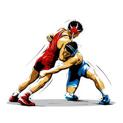
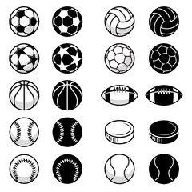

All in all there is too many things to list that I enjoy doing and have done in the past.
But I'll Try
Wrestling
I wrestled for 9 years up through high school. It was some of the most intense
training and workout that I have ever done and definately the most I have gotten into
trying to be great at something. Competeing at a state level at anything is a lot.
I feel like wrestling shaped my work ethic, my confidence, and my outlook on others greatly.
Tennis/Snowboarding/Soccer
These were the sports that either competed with wrestling for me (in the case of Snowboarding)
or were in the off seasons to keep me in shape like Soccer and Tennis. Eventually though,
I started doing several styles of wrestling that took my time all year around.
Video Games
All of that sporting fought for time with video games and eventually lost as I got out of high school
where I did not have a dedicated place to do any of the sports. Video games have been a
huge part of my life and social life, so much so that I have had plenty of friends that I knew
just as well as family that I only knew through games.
Yes there is a list of games that I think everyone should try.